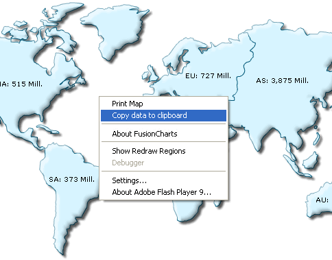

| Using Context Menu | ||||||||||||
|
FusionMaps XT allows you to export data from your maps in CSV format. The export of data can be triggered in two ways:
Let's study both of them one by one. |
||||||||||||
| Setting up the map to export data from context menu | ||||||||||||
|
To allow export of data using context menu, you need to specify the following in XML: |
||||||||||||
<map borderColor='005879' fillColor='D7F4FF' numberSuffix='Mill.' includeValueInLabels='1' labelSepChar=': ' baseFontSize='9' showExportDataMenuItem='1'> <data> <entity id='NA' value='515' /> <entity id='SA' value='373' /> <entity id='AS' value='3875' /> <entity id='EU' value='727' /> <entity id='AF' value='885' /> <entity id='AU' value='32' /> </data> </map> |
||||||||||||
|
As soon as showExportDataMenuItem='1' is set in the map, a new item is added to the map's context menu, as shown below: |
||||||||||||
|  | ||||||||||||
The label of this menu item can be customized by setting: <map ... exportDataMenuItemLabel='Copy the data of this map' ...> When you select this item, the data of this map will be copied to your clipboard. If you open any text editor and paste the content of the clipboard, you'll get something as under: |
||||||||||||
"Id","Short Name","Long Name","Value" "NA","NA","North America","515" "SA","SA","South America","373" "EU","EU","Europe","727" "AS","AS","Asia","3875" "AF","AF","Africa","885" "AU","AU","Australia","32" |
||||||||||||
| This is basically the CSV representation of your map's data. Let us next see how to format the output CSV data using various export related XML attributes that FusionMaps XT exposes. | ||||||||||||
| Customizing the output CSV format | ||||||||||||
You can customize the following aspects of the output CSV data:
The following attributes help in configuring this: |
||||||||||||
|
||||||||||||
In the next section, we'll see how to access this data using JavaScript API. |